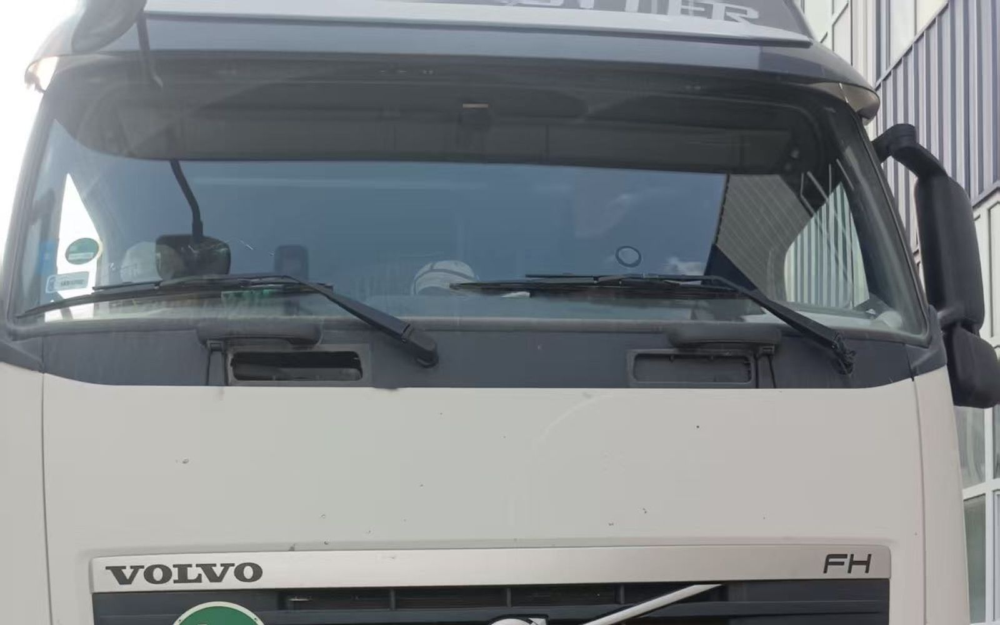

承运与跟踪
中亚段谁在开车：车头、封签和你手里能拿到的东西
询价时最常被问的一句是：过了中国口岸，是不是换车、换司机。答案是可能换，而且这是跨四个国家公路运输的常态。判断一票货稳不稳，不该只看「是不是同一台车」，要看三件事：谁在承运、封条什么时候开、货在哪有记录。
- 中亚过境段的车头与司机，可能是过境国持牌合作承运人
- 直达车在布哈拉换装一次；换装车在奥什和布哈拉各一次
- 北斗加 GPS 每小时定位记录，车门带电子封签
- CMR 运输保险每车责任上限 25 万美元
这条线为什么必然会换车头
乌恰线是新疆经吉尔吉斯斯坦、乌兹别克斯坦、土库曼斯坦，从萨拉赫斯入境，再到马什哈德海关或德黑兰西关。霍尔果斯线从哈萨克斯坦起步，之后同样经乌兹别克斯坦、土库曼斯坦。要过四个国家的境，车头就要符合各段的牌照、司机签证和当地调度习惯。这不是临时凑车，而是这条线本来的结构。
自有车与协作承运人各管哪一段
我们的车是 45 台以上自有及协议调度的帘布半挂，480–540 马力、13.6 米，另外配 17.5 米低平板拉超限件。中亚过境段的车头和司机，可能是过境国注册的持牌合作承运人：过境国牌照、司机签证和当地调度效率，决定了这一段由谁跑更稳。
所以「全程一台车、一个司机、绝不换」这种说法，在跨四个国家的线路上是不准确的。真要判断，看的是换装几次、封条怎么管、出问题谁负责。
换车头不等于换责任
TIR 是起运地加封加一份 carnet。它的作用是把沿途开箱查验和换装的次数压低，不是降到零。这条线用中国侧签发的 carnet，由承运方作为 TIR 运营方持有，所以伊朗本地 carnet 短缺、涨价这类消息，不影响这条线的单证供给——但只影响 carnet 这一项，边境拥堵、司机签证这些共性问题照旧存在。
需要换装的节点，封条按程序开启并重新加封。直达车全程只在布哈拉换装一次；换装车在奥什换一次、布哈拉再一次。TIR 不改变时效，也不改变运费。
货在哪：定位、封签、谁在看
车上装北斗三号加 GPS 双模定位，按小时记录位置；车门带电子封签，开合状态有记录。这些数据由出境口岸和我们德黑兰的调度在用。这里要说清楚一件事：我们不承诺「客户后台点开就能实时看车」。每票能提供到什么程度，询价时问清，以书面回复为准。
出问题找谁
运输险是 CMR 一切险，每车责任上限 25 万美元。它保的是运输过程中的货损，不等于按你的货值全额赔。高价值货请自己加保，发货人和收货人都可以加，保费由投保方承担。理赔按 CMR 程序走，谁投保、怎么报，进合同前先问清楚。

常见问答
中亚段会不会换车、换司机？
可能。中亚过境段的车头与司机，可能是过境国注册的持牌合作承运人；换装节点在布哈拉，换装车另在奥什。
换车以后封条还在吗？
需要换装时，封条按 TIR 程序开启并重新加封。TIR 让开箱和换装更少，不是没有。
能在后台实时看车吗？
车上有北斗加 GPS 每小时定位记录和车门电子封签，但我们不承诺实时查询接口；每票能给到什么，询价时书面确认。
出险赔多少？
CMR 运输保险每车最高 25 万美元；高价值货建议自己加保，发货人和收货人都可以加。
相关：布哈拉换装一次 · TIR 在这条线怎么走 · 中亚过境四国